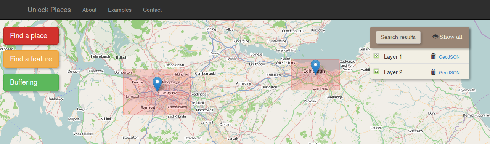
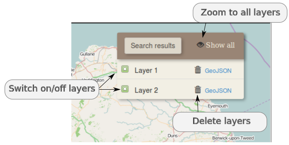

Example 4: Manipulate the search results in layers
The results can be manipulated on the "search result" panel, on the right side of the map. Each layer can be switched on/off by clicking on the check box on the left of the layer name or can be deleted by clicking the rubbish bin icon. The "Show all" icon on the search result panel sets the zoom extent of the map so as all the layers to be visible

